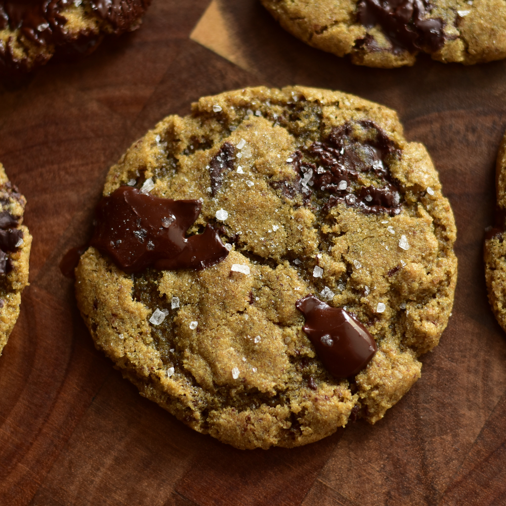

Chocolate Chip Cookies

The perfect chocolate chip cookie recipe
Ingredients:
- 1 ¾ cups dark rye flour (such as Bob's Red Mill(R) Organic Stone Ground Dark Rye Flour)
- 1 teaspoon baking powder
- ¾ teaspoon kosher salt
- ½ teaspoon baking soda
- ¼ teaspoon ground cinnamon
- ¼ teaspoon ground nutmeg
- ½ cup unsalted butter, softened
- ¾ cup firmly packed dark brown sugar
- 6 tablespoons white sugar
- 1 large egg, at room temperature
- 1 tablespoon molasses
- 1 ½ teaspoons vanilla extract
- 3 ½ ounces dark chocolate, chopped (such as Ghirardelli(R) 72% Cacao Twilight Delight bar)
- 1 teaspoon flaky sea salt, or to taste
Steps:
- Preheat the oven to 350 degrees F (175 degrees C). Line 2 baking sheets with parchment paper.
- Whisk rye flour, baking powder, salt, baking soda, cinnamon, and nutmeg together in a bowl until well combined.
- Cream butter, brown sugar, and white sugar together in a large bowl with an electric mixer until light and fluffy.
Add egg, molasses, and vanilla extract; beat until thoroughly combined. Mix in 1/2 of the dry ingredients until just combined.
Mix in remaining dry ingredients until just combined. Fold in chopped chocolate. Dough will be somewhat thick.
- Scoop out 1 1/2 tablespoon-sized pieces of dough and roll into balls. Place 2 inches apart on the prepared baking sheets.
- Bake in the preheated oven until edges of cookies are golden brown, 10 to 12 minutes. Sprinkle cookies with flaky sea salt as soon as they come out of the oven.
Allow cookies to cool on the baking sheet for 7 to 10 minutes before removing to a wire rack to cool completely.